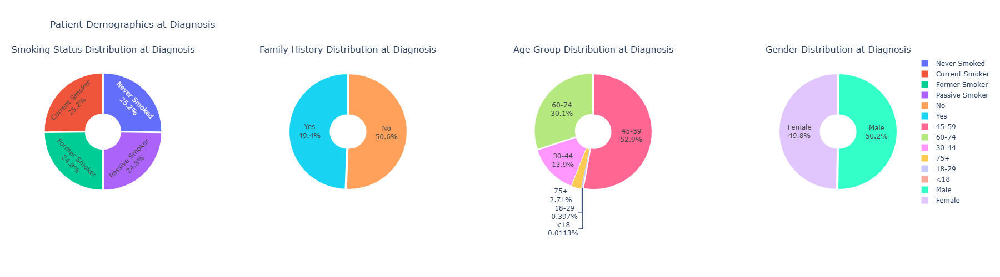
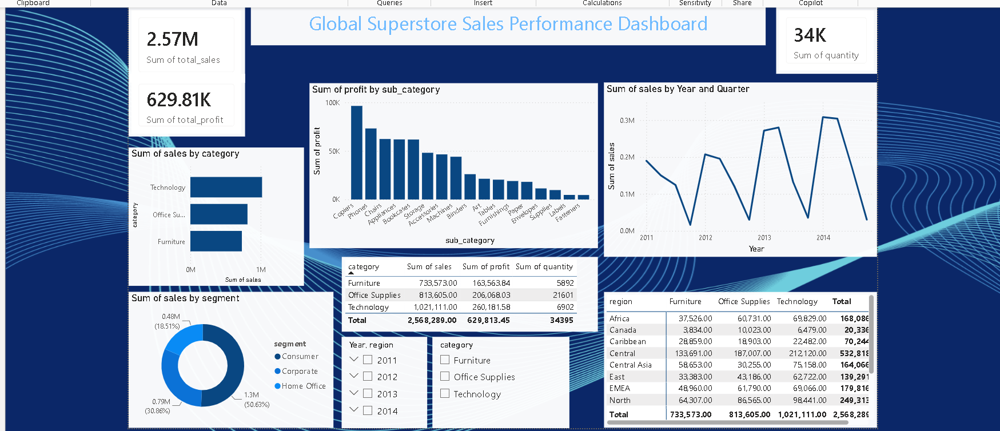
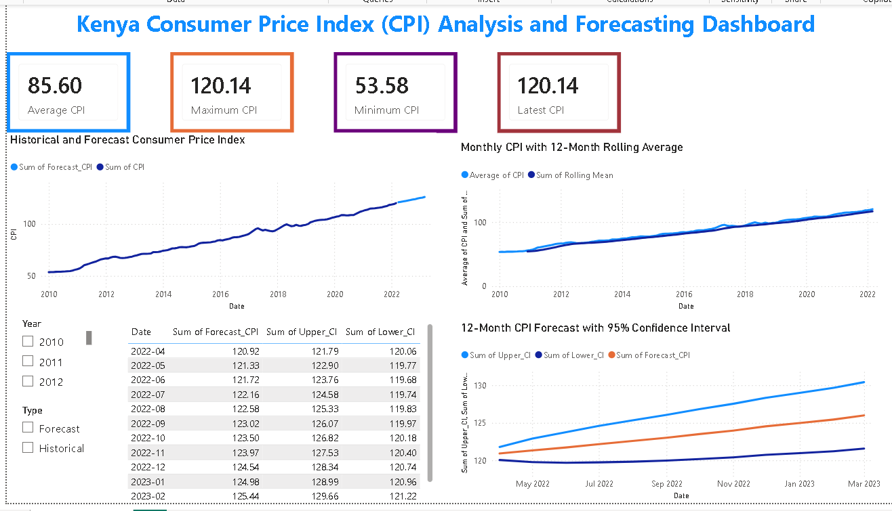

Susan Otieno
Data Science & Analytics Student
Turning data into meaningful insights
Data Science & Analytics Student
Turning data into meaningful insights
I am a Data Science and Analytics student at the United States International University – Africa with a strong interest in using data to solve real-world problems.
I enjoy exploring data, creating visualizations and learning how data can support better decision-making. My interests include data analysis, data visualization, machine learning, natural language processing and time series forecasting.
BSc Data Science and Analytics
United States International University – Africa
Expected Graduation: September 2027
Relevant coursework includes Database Systems, Data Structures and Algorithms, Data Warehousing and Mining, Probability and Statistics, Business Intelligence and Visualization, Artificial Intelligence, Natural Language Processing and Mathematical Finance.
Research and Data Analytics Attachment
Kenya Medical Research Institute (KEMRI)
January 2026 – March 2026
Teamwork, Problem Solving, Critical Thinking, Adaptability and Time Management

A group machine learning project focused on predicting lung cancer outcomes using patient-related data and classification techniques.
View Project
Interactive Power BI analysis exploring sales, profitability, customers and product performance.
View Project
Time series analysis of Kenya's Consumer Price Index to explore trends, variability, stationarity and forecasting patterns.
View ProjectA group project involving the development of a chatbot designed to assist users with bookstore-related queries using natural language processing.
View ProjectThe challenge involved extracting structured information from a website and organizing the collected information into a usable dataset.
I accessed the target webpage, identified the relevant HTML elements and extracted information about countries. The collected data was organized into structured records containing country names, capitals, population and area.
I learned how websites are structured using HTML and how information can be extracted and transformed into structured datasets for analysis.
The challenge involved cleaning and preparing a Netflix dataset for analysis by identifying missing values, inconsistencies and data quality issues.
I inspected the dataset, checked for missing values, handled incomplete records and performed consistency checks on the data. The cleaned dataset was then prepared for further analysis.
I learned the importance of data cleaning before analysis and how missing values and inconsistent records can affect the quality of analytical results.
I am open to opportunities involving data analysis, data science, business intelligence and collaborative data projects.
GitHub: github.com/Suezan884
LinkedIn: linkedin.com/in/susanotieno
Email: susanawino2002@gmail.com
Phone: +254 796 608 921